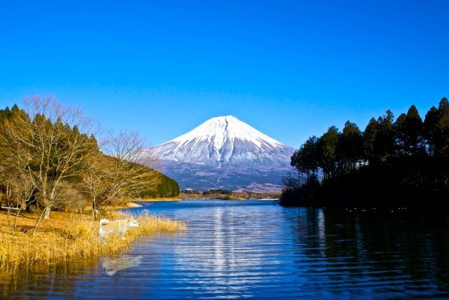
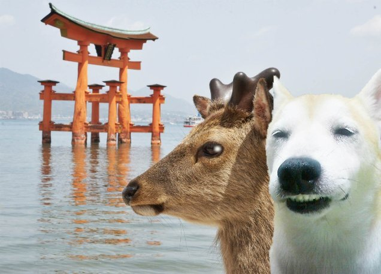

| モモの世界遺産旅行記: 日本編 (The BBB: Breakthrough Bandwagon Books) | |
| モモ | |
| The BBB: Breakthrough Bandwagon Books (2015) | |
（邦題 : 『モモの世界遺産旅行記〜日本編〜』）
Written by Momo
Translated by Tanya
Cover p hoto by Momo
Cover design by Tanya
C opyright © 2014 Momo / The BBB : Breakthrough Bandwagon Books
All rights reserved.
ISBN: 978-1-312-39643-2
モモは、柴犬の女の子です。
モモは、お母さんとお父さんのことも、育ててくれた家族のことも 、 よく覚えていません。
モモが覚えているのは、鎖で施錠されたドアの下水管のところに閉じ込められていた記憶です。
それはとっても寒くて、つらい 出来事でした。
何日間、閉じ込められていたのか、わ かりません。
何度も「助けて！」と叫びました。
近所の人たちが彼女の声に気づいて、おまわりさんが、鎖を工具で断ち切って、ドアを壊して、下水管から助けて出してくれました。
暖かい毛布にモモをくるんで、おまわりさんは仕事場に連れて行ってくれました。
モモは安心しました。
ところが、おまわりさんの仕事場で、モモは生活することができないのでした。
おまわりさんから、モモは、４日後に保護センターと言う場所に行って、天国に預けられるんだよ、と説明されました。
モモは、 天国という場所を知りませんでしたが、センターで眠っている間に連れて行ってもらえるそうでした。
次の日、ターニャさんという名前の女子学生がモモに会いに来ました。
ターニャさんは、モモをお家 （うち） に連れて行ってくれると言いました。
おまわりさんは４日後と言っていたけれど、モモは、ターニャさんのお家が天国なのかなと思いました。
おまわりさんにお礼とお別れの挨拶を言って、モモはターニャさんに抱きかかえられながら、交番を後にしました。
ターニャさんの腕の中はとっても暖かかったので、モモはウトウトして、ついに眠ってしまいました。
目覚めると、モモはターニャさんのお家 にいました。
そんなに広くは無い けれど、ターニャさんのお母さんも一緒に暮らしていて、賑やかなお家 です。
モモのために、ふかふかのベッドとタオル、お水とごはんもたくさん用意してくれていました。
おまわりさんの言う通り、寝ている間に、天国に着いたようです。
そうして、モモはターニャさんの家族になりました。
ターニャさんの家族になって、しばらく時間が経ちました。
ターニャさんは、モモに、一緒にお散歩しようと誘ってくれるのですが、モモは、外の世界が怖くて、お散歩に行きたくありませんでした。
ある日、ターニャさんは、１冊の本を見せてくれました。
「これはね、世界遺産といって、外の世界にある、素晴らしい場所なんだよ」
モモは、それらの美しい風景に、とても驚きました。
「世界遺産に行ってみたい！」
モモは、勇気を出して、外の世界に旅立つことに決めました。
1. 富士山

ある日 、モモ は日本でいちばん有名な山、富士山を訪れました。
「このあたりは 、 お水が綺麗で、とってもおいしい！」
富士山は、 2013 年に世界遺産に登録されたそうです。
モモは 、 「世界遺産」に 、 ますます 興味が湧いてきました。
2. 龍安寺
ある日、モモ は京都にある世界遺産のひとつ、龍安寺にやって来ました。
「雪に覆われたお庭が、とっても綺麗！」
石庭に足跡を付けようとしたら、お坊さんに叱られてしまいました。
「ごめんなさい......」
3 . 屋久島
ある日、モモ は日本の世界遺産のひとつ、屋久島にやって来ました。
この島は、１年を通して、とても雨が多いそうです。
でも幸運にも、今日は、良いお天気です。
まぶしい陽射しの中で、モモは気持ち良くなってきました。
うとうと......
おやすみなさい。
4 . 白川郷
ある日、モモ は日本の世界遺産のひとつ、白川郷にやってきました。
白川郷には合掌（がっしょう）造りの、可愛いお家 がたくさんあります。
ぼたん雪が、たくさん降ってきました。
お家 の囲炉裏で暖まろうっと！
5 . 厳島神社

ある日、モモ は日本の世界遺産のひとつ、厳島（いつくしま）神社にやってきました。
潮が引いたら、海の中に見えるあの鳥居まで歩いて行けると、現地のお友達の鹿さんが教えてくれました。
一緒に記念写真を撮ったのだけど、目を瞑 （つむ） ってしまって、ちょっと失敗......
6 . 小笠原諸島
ある日、モモは 東京から船で 25 時間 30 分かけて、小笠原諸島にやって来ました。
南国のように暖かくて、白い砂浜と真っ青な海がとても綺麗 です。
最近、グリーンアノールっていう 怖いトカゲが、カメさんやカタツムリさんを脅かしているんだって。
モモは、トカゲがちょっと苦手です。
7 . 法隆寺
今日は、奈良県にある法隆寺にやって来ました。
法隆寺は、この国でいちばん古い、木の建物なんだそうです。
大きな門をくぐる時に、ふたりの番人さんに、とっても怖い顔で睨まれました。
ここから出る時に、また彼らに再会してしまう。
どうしよう！
8 . 日光東照宮
今日は、日光の東照宮にやって来ました。
境内で、３人のお猿さんと出会いました。
日本では犬と猿は仲が悪いと言われているけれど、モモは 、 お友達になりたいと思いました。
9 . 白神山地
今日、モモ は、日本の世界遺産のひとつである、白神山地にやって来ました。
この山岳地帯は秋田県と青森県にまたがっていて、自然の環境が、とても良く保存されています。
ここの原生林は、青々とした緑に囲まれています。
この地域があまりにも広いので、モモは自分がどこを歩いているのか、わからなくなりそうでした。
モモは 、 迷子になってしまったようです......
1 0 . 首里城
今日、彼女は、日本の世界遺産のひとつである、沖縄県の首里城にやって来ました。
モモは、お城の瓦屋根の上に、モモに似た姿をした、何人かのお友達を見つけました。
彼らは全員が「シーサー」という名前で、みんなで建物を悪霊から守っているそうです。
シーサーたちって、かっこいい！
1 1 . 東大寺
今日は、奈良の東大寺にやって来ました。
大仏様が人々を病気や貧困から守ってくれると、昔の日本人は信じていたそうです。
大仏様の手の形は、人々の願いを叶えるポーズだそうです。
モモは、そのポーズを自分でもマネしてみました。
うまくできたかな？
1 2 . 知床
今日は、日本の世界遺産のひとつ、北海道の知床半島を訪れています。
流氷でできた平原の上は、とっても寒いです。
モモは、オオワシさん達の大家族に会いました。
オオワシさん達は冬の季節だけ、知床で暮らして、暖かくなったら、ロシアに引っ越すそうです。
来年の冬にまた会いたいなと、モモは思いました。
1 3 . 広島平和記念碑
今日は、広島平和祈念碑にやって来ました。
朽ち果てた建物を見上げているうちに、モモは、なんだか心が痛くなってきました。
ここで何が起こったのか知るために、モモは、広島平和記念資料館に行くことにしました。
1 4 . 石見銀山
今日は 、 島根県の石見銀山にやって来ました。
この銀山は今は使われていないけれど、約 400 年前には、全世界の銀の３ぶんの１も産出されたそうです。
モモは、銀山で働いていた人たちが手で掘って造った「間歩 （まぶ） 」と呼ばれる坑道のひとつ に 入ってみました。
モモも穴掘りは得意ですが、間歩は、ぜんぶで 600 もあると知って驚きました。
迷路みたい！
1 5 . 高野山
今日は、和歌山県にある高野山にやって来ました。
モモは、高野山で 、 たくさんのお坊さんに会いました。
この場所は「密教」の聖地なんだそうです（モモは、それがどういう意味なのか知りませんが）。
お坊さんたちは、紀伊山地の地域では、お坊さんだけでなく、神様を愛する人たちや 山を尊敬する人たちにも会える、と 教えてくれました。
モモは、色々な人たちとお友だちになりたいと思いました。
1 6 . 平泉
今日は、岩手県の平泉にある 、 中尊寺にやって来ました。
中尊寺の中には、黄金の御堂があるそうです。
モモは、聖なる場所に入る前に、お寺の人に教えてもらって、手水舎で両手とクチを洗いました。
最初に左手、それから右手、おクチ......合ってるかな？
あ、お水は飲まないほうがいいのかな？
モモは、ちょっと混乱しました。
1 7 . 姫路城
今日は、兵庫県にある姫路城にやって来ました。
姫路城は、白鷺のように美しい姿から「はくろじょう」とも 呼ばれているそうです。
ついに、モモは、 2014 年 5 月現時点で登録されている、日本全部の世界遺産を訪れました。
モモは、姫路城から街並みを眺めながら、白鷺のように日本を飛び発って、次は日本国外の世界遺産を訪れたいと思いました。
1 8 . 富岡製糸場
今日は、群馬県の富岡製糸場にやって来ました。
かつて富岡製糸場では、蚕 （かいこ） の繭 （まゆ） からシルク糸を作って、世界中に輸出していたそうです。
モモは、キラキラする布が大好きですが、今までシルクを知りませんでした。
シルクに触ってみると、スベスベしていて、とっても気持ちが良い！
モモはとっても気に入ったので、お土産に買って帰りました。
そうして、モモは 、 まず日本の世界遺産 17 件を旅行しました。
次に目指すのは、海外 の世界遺産、 964 件を巡ることです。
海外 の世界遺産に旅立つため、東京国際空港（羽田空港）にやって来ました。
モモは、羽田国際空港から、今、旅立ちます。
This work was exclusively created as one of the made-in-Japan content belonging to The BBB: Breakthrough Bandwagon Books.